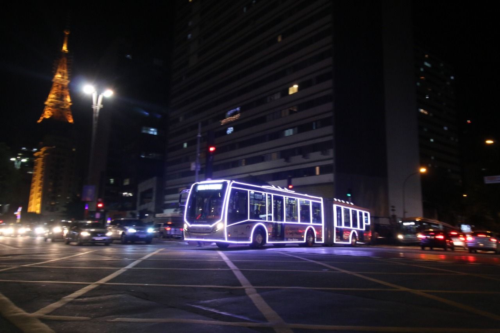

Exploring São Paulo by Bus and Subway: Your Complete Guide to SPTrans, Metrô, CPTM and Routes to Top Tourist Attractions
Embark on a journey through São Paulo's bustling bus network with insider insights to enhance your exploration of this vibrant Brazilian metropolis. From iconic landmarks to hidden gems, navigate effortlessly from the historic heart of the city to its sprawling neighborhoods, ensuring you uncover the best of São Paulo's diverse and dynamic urban tapestry.
Main subway and train stations that pass through tourist attractions
→ Sé Station
Located on the Blue Line 1 of the metro, Sé Station is historic, providing easy access to the Cathedral of Sé and the Pateo do Collegio, two cultural landmarks of São Paulo. The station is also near the Anchieta Museum.
- Cathedral of Sé: Praça da Sé, São Paulo, SP, 01001-000
- Pateo do Collegio: Praça Pateo do Collegio, 2 - Centro, São Paulo, SP, 01016-040
- Anchieta Museum: Praça Pateo do Collegio, 2 - Centro, São Paulo, SP, 01016-040
→ Luz Station
Situated on the Blue Line 1 of the metro, Luz Station is ideal for art and history lovers, offering proximity to the Pinacoteca do Estado and the Museum of the Portuguese Language.
- Pinacoteca do Estado: Praça da Luz, 2 - Luz, São Paulo, SP, 01120-010
- Museum of the Portuguese Language: Praça da Luz, s/n - Luz, São Paulo, SP, 01120-010
→ São Bento Station
Found on the Blue Line 1 of the metro, São Bento Station is strategically located to explore the São Bento Monastery, Martinelli Building, and shopping at Rua 25 de Março. The famous Municipal Market is also nearby.
- Rua 25 de Março: Rua 25 de Março, Centro Histórico de São Paulo, São Paulo, SP, 01021-200
- Municipal Market: Rua da Cantareira, 306 - Centro Histórico de São Paulo, São Paulo, SP, 01024-900
→ Consolação Station
On the Green Line 2 of the metro, Consolação Station provides direct access to the iconic Paulista Avenue and the São Paulo Museum of Art (MASP), cultural and financial centers of the city. The Trianon Park is a great nearby green retreat.
- Paulista Avenue: Avenida Paulista, São Paulo, SP, 01310-100
- São Paulo Museum of Art (MASP): Avenida Paulista, 1578 - Bela Vista, São Paulo, SP, 01310-2000
- Trianon Park: Rua Peixoto Gomide, 949 - Jardim Paulista, São Paulo, SP, 01409-001
→ Vila Madalena Station
Located on the Green Line 2 of the metro, Vila Madalena Station is perfect for exploring the vibrant street art of Batman Alley and enjoying the bohemian nightlife of the neighborhood. The station is also close to several art galleries.
- Batman Alley: Rua Gonçalo Afonso - Vila Madalena, São Paulo, SP, 05436-100
→ Barra Funda Station
On the Red Line 3 of the metro, Palmeiras-Barra Funda Station offers connections to the Latin America Memorial and Água Branca Park, important cultural and recreational sites. The Allianz Parque, home to Palmeiras football club, is also accessible from here.
- Latin America Memorial: Avenida Auro Soares de Moura Andrade, 664 - Barra Funda, São Paulo, SP, 01156-001
- Allianz Parque: Avenida Francisco Matarazzo, 1705 - Água Branca, São Paulo, SP, 05001-200
→ Paulista Station
Part of the Yellow Line 4 of the metro, Paulista Station is situated in the heart of Paulista Avenue, providing access to theaters, cinemas, and entertainment options on Augusta Street.
Main Bus Routes Passing Through Tourist Attractions
Bus 874C-10 (Parque do Ibirapuera): Connects visitors to the iconic
Parque do
Ibirapuera, São Paulo's largest urban park, known for its museums, cultural
institutions, and open green spaces.
Bus 5100-10 (Avenida Paulista): Provides access to Avenida Paulista,
home to the São
Paulo Museum of Art (MASP) and various cultural and financial centers, ideal for
exploring vibrant urban life.
Bus 175T-10 (Rua 25 de Março): Perfect route for shopping enthusiasts
heading to Rua
25 de Março and the Municipal Market, renowned for gourmet food and historic
architecture.
Bus 9290-10 (Liberdade): Connects to Liberdade neighborhood, known as
São Paulo's
Japanese district, offering a unique cultural experience and traditional Japanese
cuisine.
Bus 877T-10 (Pinacoteca do Estado): Leads to Luz Station, where you can
visit
Pinacoteca do Estado and the Museum of the Portuguese Language, essential for art
and history lovers.
Bus 875A-10 (São Paulo Zoo): Provides direct access to São Paulo Zoo,
one of
Brazil's largest, perfect for families and animal lovers.
Bus 5154-10 (Beco do Batman): Takes you to Vila Madalena neighborhood,
home to Beco
do Batman, famous for vibrant street art and bohemian nightlife.
Bus 5782-10 (Parque Villa-Lobos): Connects to Parque Villa-Lobos,
popular for
outdoor activities such as jogging, cycling, and picnicking.
Bus 8318-10 (Centro Cultural São Paulo): Provides access to Centro
Cultural São
Paulo, ideal for exploring cultural activities like theater, music, and art
exhibitions.
Bus 5106-10 (Allianz Parque): Direct route to Allianz Parque, a
multipurpose arena
and home stadium of Palmeiras football club, also hosting major concerts and events.
Bus 372R-10 (Itaquera): Connects to Itaquera Stadium (Arena
Corinthians), a major
sports venue and event space.
Bus 876M-10 (Museu do Ipiranga): Provides access to Museu do Ipiranga,
known for its
historical significance and beautiful gardens.
Bus 701A-10 (Santana): Runs through Santana neighborhood, offering
access to Parque
da Juventude and Santana Park, ideal for recreational activities.
Bus 8000-10 (Morumbi): Connects to Morumbi Stadium, host to football
matches and
concerts.
Bus 177H-10 (Higienópolis): Takes you to Higienópolis neighborhood,
known for
upscale shopping and cultural attractions.
Bus 3701-10 (Penha): Provides access to Penha Convent, a historic site
and religious
landmark.
Bus 6200-10 (Butantã): Connects to Butantan Institute, famous for
biomedical
research and snake venom.
Bus 7007-10 (Campo Limpo): Passes through Campo Limpo neighborhood,
offering access
to Parque Burle Marx, known for its landscape architecture.
Bus 675G-10 (Grajaú): Connects to Grajaú neighborhood, providing access
to São Paulo
Botanical Garden.
Bus 901T-10 (Tucuruvi): Takes you to Tucuruvi neighborhood, offering
access to Serra
da Cantareira State Park, a natural reserve with hiking trails.
São Paulo's extensive bus and metro network offers convenient access to diverse attractions across the city. From historic landmarks like Sé Station to cultural hubs such as Avenida Paulista and Vila Madalena's vibrant nightlife, the transportation system connects visitors to iconic sites and hidden gems alike. Whether exploring parks, museums, or unique neighborhoods, São Paulo's public transit enhances the experience of discovering the city's rich cultural tapestry and dynamic urban life.